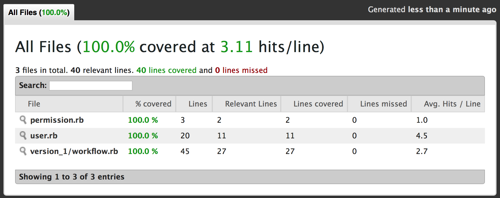

Quality levels
The following table summarizes certain levels of Ruby code quality levels, we distinguish:
| Unacceptable | Acceptable | Good | Great | Excellent | |
|---|---|---|---|---|---|
| Style | ❌ | ✅ | ✅ | ✅ | ✅ |
| Coverage | ❌ | ❌ | ✅ | ✅ | ✅ |
| Complexity | ❌ | ❌ | ❌ | ✅ | ✅ |
| Mutation | ❌ | ❌ | ❌ | ❌ | ✅ |
For any Pull Request, at least code style should be OK. Decent test coverage is highly recommended, passing complexity and mutation tests are optional.
RSpec.describe CodeStyle do
context 'code style is RuboCop compliant' do
it 'is OK to create a Pull Request'
end
it 'gives additional bonus points' if coverage == 100
next 'thing to do' is.to satisfy(Reek)
μυτατε(code).and raise quality.to Level.new
endStyle
The Ruby Style Guide is a main document to be considered for using on all projects.
In addition, RuboCop tool is engaged for enforcement of following these rules. The default RuboCop ruleset is used, with several minor exceptions:
- LineLength is set to 120 characters, since 80 doesn’t make sense with wide monitors and high DPI values.
- AbcSize is set to 25. Ruby is pretty expressive language and it’s very possible to have high AbcSize metric on small methods (10 lines maximum is the RuboCop default) without sacrificing readability.
- Documentation rule is disabled. Despite it’s critical for public projects to have it (for some languages documentation is required, otherwise library cannot be published), we prefer another approach: because of other RuboCop rules, the code is split to small methods and classes, has low cyclomatic complexity and self-documented, thus it’s clear and easy to understand. So formal documentation on classes and method is usually not required (but still appreciated).
Most controversial rules like ‘max. 10 lines per method’ and ‘max. 100 lines per class’ – are not changed. Arguments about large case statements or long hash definitions should be refused. Large case statement can always be converted to the data structure. Having long hash definitions in the code also usually signals about hidden data structure. Thanks to Ruby’s ‘block magic’ ©, it is possible to easily reuse code parts, extracted to the small, properly named, separate method.
Working on legacy code, which wasn’t developed with full style guide compliance can be hard and tedious. Fortunately, there is a script, aimed to help. Being executed with –branch flag – it checks only lines, written by developer in current branch (committed or not) without touching legacy code. That is handy tool to check the code, before creating a pull request.
If you have following folder structure:
$ tree -L 1 -A -C
.
├── admin-area
├── ...
├── env_setup.sh
└── patched_rubocop.rb
9 directories, 2 filesBefore creating pull request you should inspect and fix style violations:
$ ./pacthed_rubocop.rb --branch
Inspecting 4 files
W.CC
Offenses:
....
4 files inspected, 11 offenses detectedTest Coverage
There are test coverage tools out there for almost every language. But most of them collect statistics only about source code lines, whether particular line of source code was executed or not (and how many times). But in fact, there is more than just line coverage: just look at this slide.
- C1 is intended to track code branches execution. Each source code line can potentially contain more than one code branch. Think about conditions, loops, early returns and nasty things like try operator. To satisfy C1 coverage, tests should contain at least two cases, one for each of the execution branch. Otherwise, some branches may remain un-visited having, however, C0 coverage on this particular line satisfied.
- C2 is called condition coverage. If condition expression consists of more than one sub-expressions (for example:
if a == 2 || b.nil?), it ensures that each sub-expression gets evaluated to true and false at least once.
SimpleCov is used to check test coverage. It generates nice-looking reports, like this:

Test coverage is not about TDD (which is about code design, not tests) or system quality. Having 100% C0 test coverage does not even guarantee, that code is free of typos.
But it definitely helps to:
- improve code design (poorly designed code is hard to test)
- ensure, that code works (with sane amount of mocking)
- protect from refactoring errors (we are people, we all make mistakes)
SimpleCov reports are collected automatically on running RSpec and stored in coverage folder of the project.
Complexity
Reek (belongs to the MetricFu toolset) is a tool that examines Ruby classes, modules, methods and reports any Code Smells it finds.
In general, the default ruleset is used, with some exceptions:
- UtilityFunction is enabled for public methods only. Most controversial rule NillCheck is still enabled. Be patient and listen what reek is trying to say: Law of Demeter violation or maybe absence of Null Object?
Mutation Coverage
Mutation testing technique is based on quite a simple idea. Say, you have a bunch of code and a number of tests to verify its correctness. Doesn’t matter how those tests were born: using techniques like TDD or written afterwards. Mutation testing allows to verify that your test suite is full. By ‘full’ it means – there is no code (code execution path, to be precisely correct) that is not covered with at least one test case.
There are plenty or articles and presentations explaining what is mutation testing and mutant itself. If you are not familiar – it’s definitely worth to check.
Running mutant is pretty easy:
$ RAILS_ENV=test bundle exec mutant -I . -I spec --use rspec -j 1 --fail-fast "PaylocityParams#person"Last arguments is – name of the class and method you want to mutate and check whether the tests are still green or not.
Protection
In order to protect from accidental mistakes and enforce high code style consistency and adhere to the coding standards, VCS commit hooks are used (both in form of CI checks and on local development machines).
On development machines it is recommended to aggregate all checks in a commit hook tool like Overcommit, which allows to configure and validate numerous checks before push or commit. Here is an example of configuration file:
PrePush:
Brakeman:
enabled: true
PreCommit:
ALL:
problem_on_unmodified_line: warn
requires_files: true
required: false
quiet: false
parallelize: true
ErbLint:
enabled: true
command:
["bundle", "exec", "erblint", "."]
RubySyntax:
enabled: true
command:
["ruby", "-e", "ARGV.each { |applicable_file| ruby_c_output = `ruby -W:no-experimental -c #{applicable_file}`; puts ruby_c_output unless $?.success? }"]
RuboCop:
enabled: true
command: ["bundle", "exec", "rubocop"]
RSpec:
enabled: true
command: ["bundle", "exec", "rspec"]
DatabaseConsistency:
enabled: true
quiet: false
command: ["bundle", "exec", "database_consistency"]
BundleCheck:
enabled: true
BundleAudit:
enabled: true
TrailingWhitespace:
enabled: true
YamlSyntax:
enabled: true
AuthorEmail:
enabled: true
pattern: '[a-z][a-z0-9.\-][a-z]+@example\.com'
AuthorName:
enabled: true
CommitMsg:
RussianNovel:
enabled: true
TextWidth:
enabled: true
max_subject_width: 80
max_body_width: 80